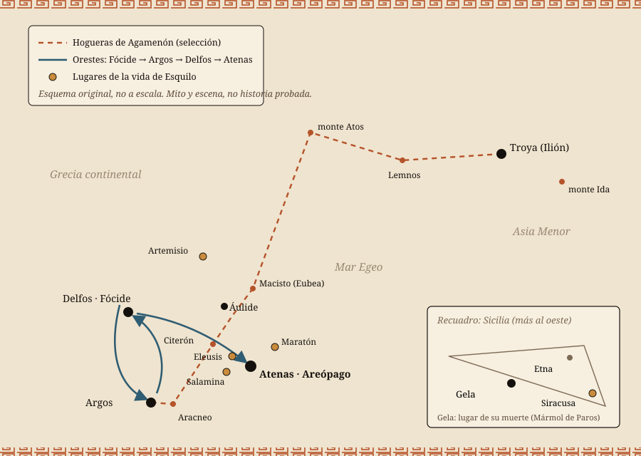

Un dramaturgo del que sabemos menos de lo que creemos
En la primavera del año 458 a. C., en el teatro de Dioniso al pie de la Acrópolis, Esquilo presentó tres tragedias seguidas sobre una misma familia: un rey asesinado al volver de la guerra, un hijo que venga a su padre matando a su madre y un tribunal que, por primera vez, decide qué hacer con la sangre derramada. Ganó el primer premio. Es la única trilogía trágica griega que se ha conservado completa.
Esta revista cuenta esa historia de principio a fin, escena por escena, con palabras propias y sin reproducir traducciones protegidas. Pero también cuenta la vida de su autor, y ahí conviene ir con cuidado: de Esquilo nos han llegado unos pocos datos fiables y muchas anécdotas escritas siglos después. Para no mezclar unas cosas con otras, cada afirmación delicada lleva una etiqueta.
Atestiguado significa que lo afirma un documento antiguo concreto, como la crónica del Mármol de Paros o las propias obras. Tradición antigua son relatos transmitidos por autores posteriores que no podemos comprobar. Reconstrucción incierta indica una hipótesis moderna razonable. Interpretación marca lecturas, nuestras o de estudiosos, que el lector puede discutir. Las pestañas de «Varias lecturas» presentan interpretaciones enfrentadas, no verdades.
Las tragedias de Esquilo son un mito representado en escena, no historia probada. Su vida, en cambio, es historia… con muchos huecos.
De Troya a la colina de Ares
Un esquema, no un mapa a escala. En rojo, la cadena de hogueras con la que, según Agamenón, la noticia de la caída de Troya llegó a Argos en una sola noche. En azul, el camino de Orestes. En ocre, lugares ligados a la vida del poeta. Los lugares de la trama son escenarios del mito; los de la vida de Esquilo, en cambio, son históricos.
El Egeo y Sicilia: los escenarios sobre tierra y mar
Esquema dramático de lectura

El hombre detrás de las máscaras
Lo que sabemos, lo que se cuenta y lo que no sabremos nunca
Fuentes: Mármol de Paros · Pausanias · Aristóteles · la «Vida» antigua
Esquilo, hijo de Euforión, fue un ateniense que vivió aproximadamente entre el 525 y el 456 a. C. Esas fechas no salen de un registro civil, sino de una inscripción: el llamado Mármol de Paros, una cronología grabada en el siglo III a. C., dice que combatió en Maratón a los treinta y cinco años y que murió en Gela, en Sicilia, a los sesenta y nueve. Restando, obtenemos su nacimiento. Es un testimonio antiguo conservado, escrito más de dos siglos después de su vida, y las fechas ya exigen un cálculo.
Lo demás llega por capas. Una biografía anónima, conocida como la «Vida» de Esquilo y escrita mucho después de su muerte, lo hace nacer en Eleusis, el pueblo de los famosos misterios de Deméter. Pausanias, un viajero del siglo II d. C., cuenta que el propio Esquilo decía haber soñado de joven, mientras vigilaba unas viñas, que Dioniso le ordenaba escribir tragedias. Es una historia bonita y probablemente una leyenda: el dios del teatro eligiendo a su poeta.
Más sólida es la guerra. Maratón, en el 490, la recuerda el Mármol de Paros y la recordaría su epitafio. Pausanias añade que se distinguió también en las batallas navales de Artemisio y Salamina, en el 480; eso es tradición, aunque verosímil. Herodoto menciona a un Cinegiro, hijo de Euforión, muerto heroicamente en Maratón; que fuera hermano del poeta lo dice la tradición posterior, apoyada en la coincidencia del nombre del padre.
Como dramaturgo, en cambio, pisamos terreno firme. Según el Mármol, logró su primera victoria trágica en el 485/484. Las noticias que acompañan a las obras conservadas fechan Los persas en el 472, Los siete contra Tebas en el 467 y la Orestíada en el 458. Un papiro publicado en 1952 obligó a retrasar Las suplicantes, que se creía muy antigua, a los años 460. Aristóteles, en la Poética, le atribuye una innovación decisiva: añadir un segundo actor, reducir el peso del coro y dar el protagonismo al diálogo.
Escribió muchas obras —entre setenta y noventa, según distintas fuentes antiguas— y ganó numerosos premios, aunque las cifras no coinciden. Viajó a Sicilia, invitado por Hierón, tirano de Siracusa, para quien compuso Las etneas. De todo ese repertorio se conservan completas siete tragedias, y la autoría de una de ellas, Prometeo encadenado, se discute desde hace décadas. Lo demás son títulos y fragmentos.
De Esquilo sabemos cuándo luchó, cuándo ganó y dónde murió. Casi todo lo demás es tradición.
Qué sabemos y cómo lo sabemos
Cada afirmación sobre su vida, con su grado de certeza y la fuente de la que procede.
| Afirmación | Estatus | Fuente |
|---|---|---|
| Nació hacia el 525/524 a. C. | Atestiguado | Cálculo a partir del Mármol de Paros (§ 50 y § 61): 35 años en Maratón (490) y 69 al morir (456/455). Las cronologías antiguas también calculaban. |
| Era hijo de Euforión, ateniense | Atestiguado | Epitafio transmitido por la «Vida» y Ateneo; Pausanias 1.14.5 lo resume. |
| Nació en Eleusis | Tradición antigua | «Vida» de Esquilo y léxicos tardíos. Aceptado por muchos, pero no comprobable. |
| Combatió en Maratón (490) | Atestiguado | Mármol de Paros § 50; epitafio (Pausanias 1.14.5). |
| Combatió en Artemisio y Salamina (480) | Tradición antigua | Pausanias 1.14.5 y noticias tardías. Los persas describe Salamina con viveza, pero eso no prueba su presencia. |
| Cinegiro, héroe de Maratón, era su hermano | Tradición antigua | Herodoto 6.114 nombra a «Cinegiro, hijo de Euforión»; el parentesco con el poeta lo afirma la «Vida». |
| Dioniso se le apareció en sueños y le mandó escribir tragedias | Tradición antigua | Pausanias 1.21.2, que lo atribuye al propio Esquilo. |
| Primera victoria trágica en el 485/484 | Atestiguado | Mármol de Paros § 52. |
| Introdujo el segundo actor | Atestiguado | Aristóteles, Poética 4 (1449a). Es la explicación de Aristóteles, escrita un siglo después. |
| Las suplicantes es de los años 460 | Reconstrucción incierta | Papiro de Oxirrinco 2256 fr. 3, publicado en 1952; la fecha exacta (a menudo 463) se discute. |
| Prometeo encadenado es obra suya | Reconstrucción incierta | Atribución antigua; puesta en duda por argumentos de estilo y métrica (p. ej., M. Griffith, 1977). |
| Fue acusado de revelar los misterios de Eleusis | Tradición antigua | Aristóteles (Ética a Nicómaco III) solo dice que Esquilo «no sabía que era secreto»; el juicio lo cuentan comentaristas posteriores. |
Cronología con grado de certeza
Verde: lo afirma un documento antiguo. Terracota: tradición que no podemos comprobar. Ocre: hipótesis moderna.
Esquema original para esta revistaUn rostro probablemente imaginado
Los retratos de Esquilo que conocemos son copias de época romana de obras griegas posteriores a su muerte, y la identificación de algunos se basa en inscripciones o comparaciones discutidas. Pausanias ya advertía de que la estatua del poeta en el teatro de Atenas se hizo mucho después. Tómese como lo que es: la idea que la Antigüedad se hizo de un poeta venerable, no un retrato del natural.
Atenas, primavera del 458 a. C.
Un festival, un teatro y una ciudad en plena reforma
Contexto histórico · noticia de la representación (hipótesis de Agamenón)
Las tragedias no se representaban cualquier día. Se ofrecían en las Grandes Dionisias, la fiesta de primavera en honor de Dioniso, ante miles de ciudadanos sentados en la ladera sur de la Acrópolis. Tres poetas competían, cada uno con tres tragedias y un drama satírico, una pieza burlesca con coro de sátiros. Un jurado de ciudadanos decidía el ganador.
En el 458, siendo arconte Filocles, Esquilo presentó Agamenón, Coéforas y Euménides, seguidas del drama satírico Proteo, hoy perdido. Ganó. A diferencia de otros autores, Esquilo solía encadenar las tres tragedias en una sola historia, y esta es la única de esas trilogías que se ha conservado entera.
El espectáculo era muy distinto del teatro moderno. Todos los actores eran hombres, llevaban máscaras y podían interpretar varios papeles. El coro, de doce o quince miembros, cantaba y bailaba entre las escenas. Muchos estudiosos piensan que la Orestíada es la obra conservada más antigua que aprovecha un edificio escénico con puerta central, la skené: una fachada de palacio que se abre para mostrar cadáveres. Y las tres obras usan ya tres actores con texto, la novedad que Aristóteles atribuye a Sófocles.
La ciudad que miraba estaba agitada. Pocos años antes, hacia el 462/461, el político Efialtes había despojado al Consejo del Areópago, un antiguo órgano de exmagistrados, de casi todos sus poderes políticos; le quedó, sobre todo, juzgar los homicidios. Efialtes fue asesinado poco después. Atenas, además, acababa de romper con Esparta y de aliarse con Argos.
Ninguno de estos hechos aparece nombrado en las obras, pero el público tuvo que reconocerlos. Euménides termina con la fundación mítica del Areópago como tribunal de sangre y con Orestes prometiendo la amistad eterna de Argos. Qué quiso decir Esquilo con eso es una de las grandes preguntas de la trilogía.
Una casa que hereda sangre
El pasado que la trilogía da por sabido
Agamenón, párodo (vv. aprox. 40–257) y escenas de Casandra y Egisto
Cuando empieza Agamenón, la historia ya está manchada. Esquilo no la cuenta en orden: la deja salir en recuerdos, profecías y acusaciones. Reunidos, esos fragmentos forman una genealogía del crimen.
Todo arranca con dos hermanos, Atreo y Tiestes. Tiestes sedujo a la esposa de Atreo; Atreo, fingiendo reconciliarse, le sirvió en un banquete la carne de sus propios hijos. Sobrevivió uno, todavía niño: Egisto. Esta historia la gritará Casandra en sus visiones y la repetirá Egisto para justificarse.
Los hijos de Atreo, Agamenón y Menelao, se casaron con dos hermanas, Clitemnestra y Helena. Cuando Helena se marchó a Troya con Paris, los dos hermanos reunieron una enorme flota. Aquí el coro de ancianos de Argos, en el gran canto de entrada, recuerda un presagio: dos águilas que despedazan a una liebre preñada. El adivino Calcante lo interpretó como la victoria futura de los Atridas, pero temió la ira de Ártemis, protectora de las crías.
La flota quedó detenida en Áulide por vientos contrarios que soplaban del Estrimón. El hambre y la desesperación crecían. Calcante anunció el remedio: la sangre de Ifigenia, la hija de Agamenón. El coro reconstruye la duda del rey —¿abandonar la expedición o matar a su hija?— y el momento en que, en sus palabras, «se puso el yugo de la necesidad». Desde entonces, dice el coro, su pensamiento se volvió impío.
El canto no ahorra detalles. Ifigenia suplica llamando a su padre; él ordena que la levanten sobre el altar como a una cabra y que la amordacen para que no maldiga a la casa. Al caer, su túnica teñida de azafrán resbala hacia el suelo y ella mira a cada uno de los sacrificadores como queriendo hablarles. Los ancianos se niegan a contar lo que vino después.
Ese silencio es la herida de toda la trilogía. Clitemnestra lo invocará como motivo; otros personajes lo callarán. Y en medio de ese canto aparece la frase que se suele considerar la ley del mundo de Esquilo: Zeus estableció que el ser humano aprende a través del sufrimiento.
Zeus abrió a los mortales el camino del entendimiento con una ley: aprender sufriendo. (Agamenón, vv. aprox. 176–178, paráfrasis)
Árbol de la casa de Atreo
Un árbol simplificado que sigue la versión de Esquilo. Cada flecha es una muerte que reclama otra.
Esquema original para esta revistaAgamenón I · La hoguera en la noche
Un vigía, un coro de ancianos y una reina que sabe más que todos
Agamenón, vv. aprox. 1–680
La obra empieza con un hombre tumbado en el tejado del palacio de Argos. Es un vigía, y lleva un año entero, noche tras noche, esperando una señal de fuego que anuncie la caída de Troya. Habla del rocío, del sueño que no llega, de la casa que «ya no se gobierna como antes». Insinúa que sabe algo que no puede decir: un buey pesado le pisa la lengua. Entonces ve la llama, grita de alegría y corre a avisar a la reina.
Entra el coro de ancianos argivos, demasiado viejos para haber ido a la guerra. Recuerdan los diez años de campaña, el presagio de las águilas, el sacrificio de Ifigenia. Su canto es largo, oscuro y lleno de presentimientos. No saben aún qué significan los fuegos encendidos en los altares de la ciudad.
Clitemnestra se lo explica, y la escena es una exhibición de inteligencia. Troya ha caído esta misma noche, dice. Los ancianos dudan: ¿un sueño, un rumor? Ella responde con la descripción de una cadena de hogueras que ella misma organizó, de monte en monte, desde el Ida, junto a Troya, pasando por Lemnos, el Atos y las cumbres de Eubea y del Ática, hasta el Aracneo, frente a Argos. El fuego cruzó el Egeo como un corredor de relevos.
Después imagina la ciudad vencida: los vencedores borrachos de botín y los vencidos llorando sobre sus muertos. Y deja caer una advertencia: si los griegos respetan a los dioses de Troya, volverán a salvo; si no, puede despertar el dolor de los muertos. El coro no capta del todo el doble sentido.
Llega un heraldo del ejército. Besa la tierra natal, recuerda las penalidades del asedio —el frío, la humedad, las camas en el suelo— y confirma la victoria. Pero cuando le preguntan por Menelao, tiene que contar la otra cara: una tormenta dispersó la flota al volver, y muchas naves se hundieron. La victoria llega acompañada de pérdidas.
Clitemnestra despide al heraldo con un mensaje para su esposo: que venga cuanto antes, que encontrará una esposa fiel que ha guardado la casa como un perro guardián. Ella sabe que el público conoce el mito. Cada una de sus palabras significa dos cosas.
La amenaza que el coro presiente
Guérin pinta lo que la tragedia nunca muestra: el instante previo al crimen. Su escena se aparta de Esquilo —allí Agamenón muere en el baño, no dormido en la cama, y Clitemnestra no duda—, pero capta bien la atmósfera de esta primera mitad: un palacio en calma aparente donde todos, menos el rey, intuyen lo que va a pasar.
Escuchar
Tanéyev dedicó años a una «trilogía musical» basada en la Orestíada de Esquilo, estrenada en San Petersburgo en 1895. Esta obertura de concierto, escrita con temas de la ópera, pasa de la tensión sombría a la luz: el mismo arco que recorre la trilogía, de la noche del vigía a las antorchas finales.
Vínculo documentado: La ópera Orestíada de Tanéyev sigue las tres tragedias de Esquilo; la obertura op. 6 se basa en sus temas. Grabación publicada por el sello en el canal oficial «Topic» de la Orquesta Sinfónica Académica de Novosibirsk.
Agamenón II · La alfombra púrpura
El regreso del rey, la profecía de Casandra y la red
Agamenón, vv. aprox. 780–1673
Agamenón llega en carro, vencedor, con una prisionera troyana a su lado: Casandra, hija de Príamo, sacerdotisa de Apolo. Saluda a los dioses de Argos y promete poner orden en la ciudad. Clitemnestra sale a recibirlo con un largo discurso sobre su soledad y sus noches de insomnio, y ordena a sus esclavas que extiendan en el suelo unos tejidos teñidos de púrpura, preciosos, para que el rey no pise la tierra.
Agamenón se resiste. Caminar sobre esas telas es un honor propio de los dioses, dice, y un hombre debe temer la envidia divina. Pero ella discute con él frase a frase y él acaba cediendo. Se quita las sandalias y avanza sobre la púrpura hacia el interior del palacio. La imagen es inolvidable: la riqueza de la casa pisoteada, un camino rojo como la sangre que lo lleva a la muerte.
Casandra se queda fuera, muda. Clitemnestra la invita a entrar y ella no responde. Cuando por fin habla, no lo hace con palabras normales, sino con gritos al dios Apolo. Sus visiones se suceden: ve niños degollados que lloran en esa casa, la carne servida a un padre, una bañera, una red, un golpe. Ve su propia muerte. El coro la escucha con creciente angustia sin entender del todo.
Casandra explica su maldición: Apolo le dio el don de la profecía para conquistarla; ella lo rechazó, y el dios hizo que nadie creyera nunca sus vaticinios. Aun así, anuncia que alguien vengará estas muertes: un hijo desterrado que volverá para matar a su madre. Después, sabiendo lo que le espera, entra en el palacio.
Desde dentro se oye la voz de Agamenón: está herido, golpeado otra vez. Los ancianos discuten qué hacer y no hacen nada. Las puertas se abren y aparece Clitemnestra junto a los cuerpos de Agamenón y Casandra. Ahora habla sin dobleces. Lo envolvió en una tela como una red de pescar, sin salida, y lo golpeó dos veces; cuando cayó, le dio un tercer golpe como ofrenda al Zeus de los muertos. Dice que la sangre que le salpicó la alegró como la lluvia alegra los sembrados.
El coro la acusa y ella devuelve la acusación: ¿dónde estaba esa indignación cuando Agamenón sacrificó a su propia hija? Invoca a Ifigenia, a la Justicia y al espíritu vengador de la casa. Entonces aparece Egisto con sus guardias y cuenta la historia del banquete de Tiestes. El coro lo desprecia y le recuerda que Orestes vive. Están a punto de llegar a las espadas cuando Clitemnestra los detiene: ya hay bastante sangre. La obra termina con los asesinos en el poder y una amenaza en el aire.
Un camino de púrpura desde el carro hasta la puerta: la casa entera convertida en alfombra para una muerte.
Clitemnestra después del crimen
Collier muestra a Clitemnestra tal como sale a escena en Esquilo: sin esconderse, sin pedir perdón, ante el palacio abierto. El hacha es una elección del pintor; el texto de Agamenón no deja claro si el arma fue una espada o un hacha, y los estudiosos lo discuten. Lo que sí está en el texto es la actitud: una mujer que reivindica el crimen como justicia.
Escuchar
Xenakis compuso esta música para una representación de la Orestíada de Esquilo en Ypsilanti (Míchigan) en 1966 y la convirtió después en suite de concierto, cantada en griego antiguo. Su percusión seca y sus coros casi gritados ayudan a imaginar el impacto de escenas como los alaridos de Casandra.
Vínculo documentado: Escrita como música incidental para la producción de la Orestíada del Ypsilanti Greek Theatre en 1966 (editorial Boosey & Hawkes). Interpretación subida por el propio departamento de interpretación musical de la Universidad de Canterbury.
Coéforas I · Ante la tumba del padre
Un mechón de pelo, unas huellas y un sueño de serpientes
Coéforas, vv. aprox. 1–584
Han pasado años. Orestes, que se crió lejos, en la Fócide, regresa a Argos acompañado de su amigo Pílades. El oráculo de Apolo en Delfos le ha ordenado vengar a su padre y lo ha amenazado con terribles castigos si no lo hace. Su primer gesto es depositar un mechón de su cabello en la tumba de Agamenón.
Al oír que alguien se acerca, los dos jóvenes se esconden. Llega un grupo de mujeres vestidas de luto: son las esclavas del palacio, las «portadoras de libaciones» que dan título a la obra. Con ellas viene Electra. Clitemnestra las ha enviado a derramar ofrendas sobre la tumba porque ha tenido una pesadilla y teme la ira de los muertos.
Electra no sabe qué pedir. ¿Cómo rezar por quien envía las ofrendas, si fue la asesina? El coro la aconseja: que pida un vengador. Electra reza por el regreso de su hermano. Entonces descubre el mechón sobre la tumba y lo compara con su propio cabello; ve unas huellas y comprueba que encajan con las suyas. La esperanza la hace temblar. Orestes sale de su escondite y, para convencerla, le muestra un tejido que ella misma bordó para él cuando era niño.
Sigue una de las escenas más extensas y extrañas de la tragedia griega: un gran lamento cantado entre Orestes, Electra y el coro ante la tumba. Durante largos pasajes invocan al padre muerto, recuerdan la humillación de su entierro y se dan ánimos unos a otros. Es como si necesitaran despertar al muerto y también a sí mismos para lo que van a hacer.
Orestes pregunta por qué su madre envió ofrendas. El coro le cuenta el sueño: Clitemnestra soñó que daba a luz una serpiente, la envolvía en pañales como a un bebé y le daba el pecho; la serpiente sacaba sangre junto con la leche. Orestes no duda: él es esa serpiente. Acepta el presagio y traza su plan. Entrará en el palacio como un forastero de la Fócide, con Pílades, y matará a Egisto en cuanto lo vea. A Electra le pide que vigile dentro y al coro que guarde silencio.
Electra ante la tumba
Leighton aísla a Electra en su duelo, sola ante la tumba. En Esquilo nunca está sola: la acompañan las esclavas del coro, que la aconsejan y la empujan a pedir venganza. El cuadro capta el luto; la tragedia añade la presión del grupo y la pregunta política de quién gobierna la casa.
Escuchar
Milhaud puso música a la traducción francesa que Paul Claudel hizo de Coéforas. Este primer número es un lamento fúnebre coral junto a la tumba. Su mezcla de canto, voz hablada y percusión intenta recuperar la fuerza ritual del coro antiguo. Esta grabación se escucha en YouTube: su reproductor no está disponible dentro de esta página.
Vínculo documentado: Parte de L'Orestie d'Eschyle de Milhaud, sobre la traducción de Claudel de la trilogía de Esquilo. Grabación de Leonard Bernstein con la Filarmónica de Nueva York, publicada por el sello en su canal «Topic».
Coéforas II · El hijo y la madre
Un engaño, una nodriza y una pregunta a Pílades
Coéforas, vv. aprox. 585–1076
El coro canta sobre mujeres monstruosas del mito, como si preparara el terreno para lo que viene. Orestes y Pílades llaman a las puertas del palacio disfrazados de viajeros. Abre Clitemnestra, que los recibe con hospitalidad. Orestes le anuncia una noticia falsa: Orestes ha muerto en la Fócide. La reina reacciona con un lamento cuyo tono es imposible de juzgar. ¿Dolor de madre o alivio disimulado? El texto no lo resuelve.
Entonces aparece un personaje humilde e inolvidable: Cilisa, la vieja nodriza de Orestes. Llora de verdad. Recuerda cómo lo cuidó de bebé, las noches en vela, los pañales que había que lavar, porque un niño pequeño no sabe avisar de lo que necesita. En medio de una tragedia de reyes, esta mujer habla de la vida cotidiana y del amor sin grandeza. Va a llamar a Egisto para que venga con su guardia, pero el coro le pide que cambie el mensaje: que venga solo.
Egisto llega, desconfiado, y entra a comprobar la noticia. Se oye su grito. Un criado sale corriendo y llama a la reina: los muertos están matando a los vivos, dice. Clitemnestra entiende al instante, pide un hacha y se prepara para luchar. Pero se encuentra con su hijo con la espada desenvainada.
Ella se abre la ropa y le muestra el pecho que lo amamantó. Orestes vacila y se vuelve hacia su amigo: ¿qué debe hacer? ¿Puede matar a su madre? Pílades, que no ha dicho una palabra en toda la obra, habla por única vez: le recuerda los oráculos de Apolo y los juramentos, y le dice que es mejor tener a todos los hombres como enemigos que a los dioses. Clitemnestra lo intenta todo: lo culpa al destino, le advierte de la maldición de una madre y por fin reconoce en él la serpiente de su sueño. Orestes la lleva dentro.
Las puertas se abren otra vez y la escena repite, como en un espejo, el final de Agamenón: Orestes junto a dos cadáveres, Egisto y Clitemnestra. Muestra la tela en la que envolvieron a su padre y proclama que ha hecho justicia. Pero mientras habla, su mente empieza a extraviarse. Ve unas mujeres terribles, negras, con serpientes enroscadas, como Gorgonas. El coro no ve nada. Son las Erinias de su madre, las diosas de la venganza. Orestes huye hacia Delfos y el coro se pregunta dónde terminará esta cadena de violencia.
Pílades habla una sola vez en toda la obra, y es para recordar a Orestes que no puede desobedecer a los dioses.
El remordimiento de Orestes
Bouguereau condensa en una imagen el final de Coéforas: la madre muerta, el hijo que no soporta oír y las Erinias que lo acusan. En Esquilo, las diosas solo las ve Orestes; el pintor las hace visibles para todos, como hará la obra siguiente al sacarlas a escena.
Escuchar
No es una adaptación de Esquilo. La ópera de Strauss, con libreto de Hugo von Hofmannsthal, parte de la Electra de Sófocles. La incluimos como eco temático: el mismo mito visto desde la Viena de comienzos del siglo XX, con una Electra obsesionada por la venganza que en Esquilo apenas se insinúa. Esta grabación se escucha en YouTube: su reproductor no está disponible dentro de esta página.
Euménides I · Las perseguidoras
La sacerdotisa, el fantasma de una madre y un canto que encadena
Euménides, vv. aprox. 1–396
La última obra empieza en calma, en Delfos. La Pitia, la sacerdotisa de Apolo, reza ante el templo y repasa la historia del oráculo: primero fue de la Tierra, luego de Temis, después de Febe, que lo regaló a Apolo. Es un relato de sucesión pacífica, sin violencia. Entra en el santuario y sale aterrorizada, casi a gatas.
Dentro ha visto a un hombre con las manos manchadas de sangre, sentado junto a la piedra sagrada, y alrededor un grupo de mujeres horribles dormidas: ni mujeres ni Gorgonas, dice, sin alas, negras, roncando, con los ojos goteando. Son las Erinias, y en esta obra son el coro. Por primera vez el público las tiene delante.
Apolo aparece junto a Orestes. Le promete que no lo abandonará y le ordena ir a Atenas, abrazar la antigua imagen de Atenea y esperar allí un juicio. Hermes lo acompañará. Las Erinias, mientras tanto, siguen dormidas.
Entonces surge un fantasma: el de Clitemnestra. Reprocha a las Erinias que duerman mientras su asesino escapa. Les recuerda las ofrendas que les hizo en vida y les enseña sus heridas. Las diosas gimen en sueños, como perros que persiguen una presa, y por fin despiertan. Furiosas, acusan a Apolo de proteger a un matricida. Apolo las expulsa de su templo con desprecio: su sitio está en los lugares de la tortura, no en una casa de dioses.
La escena se traslada a Atenas, quizá años después. Orestes llega agotado, abraza la imagen de la diosa y declara que su mancha ya ha sido lavada con ritos de purificación. Las Erinias lo encuentran siguiendo el olor de la sangre. Rodean al suplicante y entonan un canto que llaman de atadura: una especie de conjuro que debe enredar su mente y consumirlo. Explican cuál es su función desde el origen del mundo: perseguir a quien derrama la sangre de su familia hasta más allá de la muerte.
Orestes en una vasija antigua
Esta crátera apulia del siglo IV a. C. representa la purificación de Orestes por Apolo. Es una obra antigua auténtica, posterior al estreno de la trilogía; no documenta su puesta en escena de 458 a. C.
La persecución en la pintura mural
Sargent pintó esta escena para la rotonda del Museo de Bellas Artes de Boston. Convierte la persecución en un torbellino que cae desde arriba. Es una imagen de la carrera entre Delfos y Atenas, el momento en que las Erinias aún son solo cazadoras, antes de que la obra les dé voz y argumentos.
Escuchar
Es la escena con la que empieza la obra de Esquilo: la sacerdotisa sale del templo y cuenta lo que ha visto. Milhaud la pone en la traducción de Claudel. Escuchar el horror de la Pitia ayuda a imaginar la primera aparición del coro de Erinias.
Vínculo documentado: Tercera parte de L'Orestie d'Eschyle de Milhaud, sobre la traducción de Claudel. Grabación de la Universidad de Míchigan dirigida por Kenneth Kiesler (Naxos, 2014), publicada en el canal oficial «Topic».
Euménides II · El primer tribunal
Votos iguales, una diosa sin madre y la persuasión
Euménides, vv. aprox. 397–1047
Atenea llega desde lejos, atraída por la súplica. Escucha a las dos partes con una cortesía que sorprende a las propias Erinias. Ellas solo quieren saber si Orestes mató a su madre. Orestes no lo niega, pero alega que fue purificado y que actuó por orden de Apolo. Atenea decide que el caso es demasiado grave para que lo resuelva un mortal, y demasiado grave incluso para ella sola. Elegirá a los mejores ciudadanos de Atenas y fundará con ellos un tribunal permanente para los crímenes de sangre.
Las Erinias cantan su temor: si este hombre queda libre, todos los hijos se sentirán autorizados a golpear a sus padres. Y defienden algo que suena moderno: sin miedo al castigo, ninguna ciudad respeta la justicia.
Empieza el juicio. Las Erinias interrogan a Orestes y lo acorralan. Él pregunta por qué no persiguieron a Clitemnestra cuando mató a su esposo. Ellas responden que marido y mujer no eran parientes de sangre. Apolo toma la palabra como testigo y defensor. Matar a un rey a traición no es como cualquier muerte. Y añade un argumento que hoy resulta chocante: la madre no es la verdadera progenitora, solo la nodriza de la semilla que siembra el padre. La prueba, dice, está ante ellos: Atenea nació de Zeus sin madre.
Antes de la votación, Atenea pronuncia el discurso fundacional. Esta colina, la de Ares, será sede para siempre de un consejo venerable e incorruptible. Pide a los ciudadanos que no ensucien las leyes y que no destierren de la ciudad el temor: ni anarquía ni despotismo. Los jueces depositan sus piedras en las urnas. Atenea anuncia que su voto será para Orestes, porque ella no nació de madre y está en todo del lado del padre, salvo en el matrimonio. Si los votos empatan, Orestes queda absuelto. Se cuentan las piedras: hay empate. Orestes es libre.
Orestes da las gracias y jura que Argos nunca atacará a Atenas. Se marcha y no vuelve a aparecer. Lo que queda es más difícil: las Erinias, humilladas, amenazan con derramar veneno sobre la tierra, secar los campos y hacer estériles a las mujeres.
Atenea no responde con la fuerza, aunque recuerda que tiene las llaves del rayo de Zeus. Les habla con paciencia, una y otra vez. Les ofrece un hogar bajo la tierra, junto a la colina, y honores eternos de la ciudad. Lo que vence no es una orden, sino la persuasión. Las Erinias aceptan. Su canto se transforma en bendiciones: lluvia a su tiempo, cosechas, hijos, y sobre todo que la discordia civil, insaciable de males, no ruja nunca en Atenas. La obra termina con una procesión de antorchas y mantos rojos que las acompaña a su nueva morada.
Ni anarquía ni despotismo: Atenea funda un tribunal y pide a la ciudad que no destierre del todo el miedo. (Euménides, vv. aprox. 696–699, paráfrasis)
Gela y después
Una muerte en Sicilia, una tortuga legendaria y veinticinco siglos de escena
Mármol de Paros § 61 · Plinio · Aristófanes · recepción
Dos años después de su triunfo con la Orestíada, Esquilo murió en Gela, una ciudad griega del sur de Sicilia. Lo dice el Mármol de Paros, que fecha la muerte en el arcontado de Calias, el 456/455 a. C. Por qué estaba allí no lo sabemos. Ya había visitado Sicilia antes, invitado por Hierón de Siracusa. Las explicaciones antiguas —que se marchó de Atenas dolido porque Sófocles lo había vencido, o por perder un certamen frente a Simónides— suelen considerarse inventos de biógrafos.
De su muerte circula la anécdota más famosa de su vida. Según Plinio el Viejo y otros autores, un águila que buscaba romper el caparazón de una tortuga la dejó caer sobre la cabeza calva del poeta, confundiéndola con una piedra. Plinio añade que un oráculo le había anunciado una muerte venida de lo alto y que por eso el poeta prefería estar al aire libre; y lo introduce todo con un prudente «según cuentan». Es una tradición, no un hecho documentado, y tiene el aire de esas muertes irónicas que los antiguos disfrutaban atribuir a hombres célebres.
Lo que sí está bien documentado es su fama. Atenas permitió, excepcionalmente, que sus obras volvieran a representarse después de su muerte. Aristófanes da pistas de ello: en Los acarnienses (425) un personaje cuenta que fue al teatro esperando ver a Esquilo. Y en Las ranas, del 405, el dios Dioniso baja al Hades para traer de vuelta a un buen poeta trágico. Allí organiza un concurso entre Esquilo y Eurípides, que se burlan de sus estilos: los versos grandilocuentes del primero contra el realismo del segundo. Gana Esquilo, que regresa al mundo de los vivos para salvar la ciudad.
Desde entonces, la Orestíada no ha dejado de reescribirse. Séneca, Racine y muchos otros volvieron a la casa de Atreo. En el siglo XX, Eugene O'Neill trasladó la trilogía a la guerra de Secesión estadounidense en A Electra le sienta bien el luto, y Sartre la convirtió en una reflexión sobre la libertad en Las moscas. Compositores como Tanéyev, Milhaud y Xenakis la llevaron a la música, y pintores como Sargent a los muros de un museo.
Quizá la razón es que el problema de fondo sigue abierto: qué hacemos con la violencia que exige más violencia. Esquilo no ofrece una respuesta cómoda. Muestra que salir de la cadena cuesta algo —a alguien hay que convencer, a alguien hay que dejar atrás— y que una ciudad tiene que elegir entre el miedo que paraliza y el que protege.
La muerte del poeta: hechos y relatos
| Afirmación | Estatus | Fuente |
|---|---|---|
| Murió en Gela, a los 69 años, en el 456/455 a. C. | Atestiguado | Mármol de Paros § 61. |
| Un águila le dejó caer una tortuga en la cabeza | Tradición antigua | Plinio, Historia natural 10.7 («según cuentan»); también Valerio Máximo y la «Vida». |
| Dejó Atenas resentido por una derrota ante Sófocles o Simónides | Tradición antigua | Biógrafos tardíos; la mayoría de los estudiosos lo considera improbable. |
| Sus obras se repusieron en Atenas tras su muerte | Atestiguado | Indicios en Aristófanes (Acarnienses 9–11; Ranas). La existencia de un decreto oficial la cuenta la «Vida». |
| Él mismo escribió su epitafio | Reconstrucción incierta | Pausanias y Ateneo lo atribuyen a Esquilo; la «Vida», a los habitantes de Gela. Autoría incierta. |
Hilos que atraviesan la trilogía
De la llama solitaria a la procesión de antorchas. La trilogía empieza con un hombre que espera un fuego en la oscuridad y termina con una ciudad entera iluminando un camino. La luz pasa de anunciar una muerte a acompañar una reconciliación.
Redes y telas. La púrpura que pisa Agamenón, la tela que lo atrapa, el tejido con el que Electra reconoce a su hermano, la misma tela que Orestes muestra sobre los cadáveres y los mantos rojos de la procesión final. Esquilo cuenta su historia también con objetos.
Escenas que se repiten. Las puertas del palacio se abren dos veces para mostrar a un asesino junto a dos cuerpos: primero Clitemnestra, luego Orestes. La repetición demuestra que la venganza no resuelve nada: solo cambia de mano.
Aprender sufriendo. El coro de Agamenón anuncia que Zeus enseña por el dolor. La trilogía lo pone a prueba: los personajes sufren mucho y aprenden poco, hasta que la ciudad crea una institución que aprende por ellos.
Una justicia con preguntas abiertas. El tribunal resuelve el caso, pero con argumentos discutibles, un empate y unas diosas que hay que convencer. Esquilo no presenta un final perfecto, sino uno que funciona y que sigue dando que pensar.
Galería de ilustraciones
Escenas originales creadas con IA para acompañar la lectura. Son interpretaciones imaginadas, distintas de las obras históricas y de los diagramas. Pulsa una imagen para ampliarla.